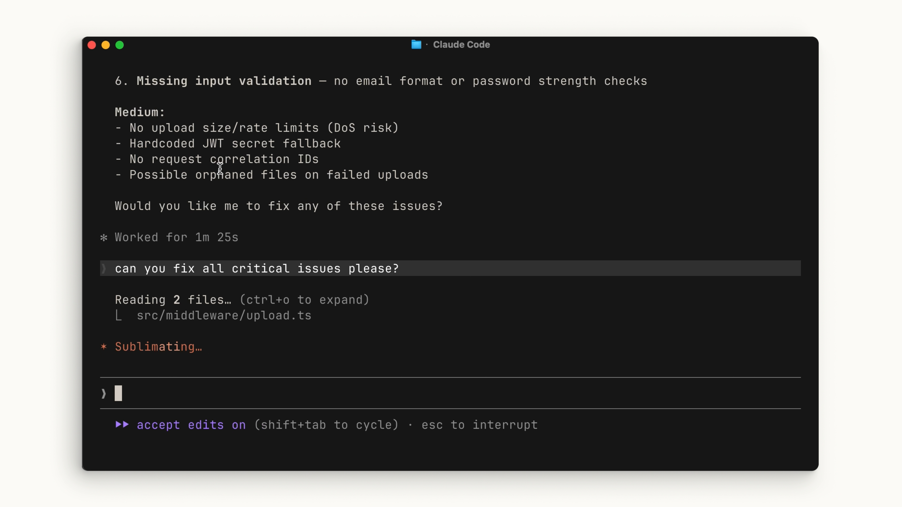
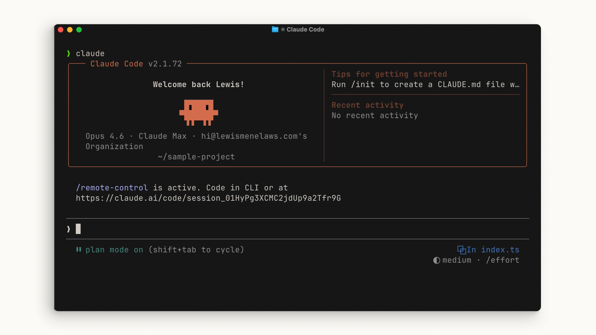

Claude Code는 다른 AI 어시스턴트와 대화하듯이 사용하면 됩니다. 프롬프트를 입력할 때, 여러분을 보호하면서도 작업을 더 쉽게 만들어 줄 몇 가지 고려 사항이 있습니다.
자동 승인 vs. 수동 승인
Claude가 제안하는 모든 파일 변경을 자동으로 수락할지, 아니면 매번 명시적인 허가를 요청하도록 할지 선택할 수 있습니다. Shift + Tab을 눌러 모드를 전환할 수 있습니다.
- 승인 모드: Claude가 파일을 편집하거나 명령을 실행하려 할 때마다 허가를 요청합니다.
- 자동 승인 모드: 파일 편집은 자동으로 승인되지만, 명령 실행에는 여전히 허가가 필요합니다.
정답은 없습니다 — 여러분이 편한 방식을 선택하면 됩니다.

계획 모드
Shift + Tab 메뉴에는 계획 모드가 있습니다. 계획 모드는 프롬프트를 받아 읽기 전용 도구를 사용하여 코드베이스를 분석하고 제안된 구현 방법을 조사합니다. 과정에서 명확히 할 질문을 하고, 실행 가능한 상세 계획을 반환합니다.
계획 모드는 복잡한 변경 사항을 계획하거나 안전한 코드 리뷰를 수행하는 데 매우 유용합니다. 기능 구현을 위해 Claude에게 여러 단계의 작업을 요청하는 경우가 많은데, 바로 이런 상황에서 계획 모드가 빛을 발합니다.

예제: 다크 모드 토글 추가하기
예제를 살펴보겠습니다. 다크 모드 토글이 필요한 애플리케이션이 있다고 가정해 봅시다. 프로젝트의 루트 디렉터리를 열고 claude를 실행합니다. Shift + Tab을 몇 번 눌러 계획 모드로 진입한 다음, 다음과 같은 프롬프트를 작성합니다:
My app needs a dark mode implemented across the entire app. Can you create a toggle switch on the header that allows a user to toggle between light mode and dark mode? I need you to find a good contrast color that works based on my existing light theme.
Claude가 계획을 세우도록 합니다. 계획을 검토한 후 문제가 없으면 승인하고, 각 단계에서 Claude가 허가를 요청하도록 합니다. 마지막에는 Claude가 무엇을 했고 어떻게 결론에 도달했는지 정확히 확인할 수 있습니다.
요약
Claude Code를 사용할 때는 프롬프트를 최대한 구체적으로 작성하세요. 모든 단계에서 직접 확인하고 싶다면 그렇게 할 수 있습니다. 계획 모드를 활용하여 코드를 실행하기 전에 Claude가 달성하고자 하는 목표의 세부 사항을 먼저 파악하도록 하세요.